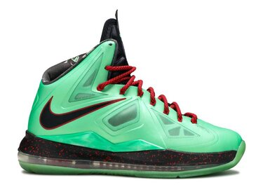

Whwere is all began
The first of Lebrons shoes came out in the year 2003, the same year he was drafted to the Cleveland Cavaliers. Lebron James being the No.1 draft of the 2003 year both Reebok and Nike were fighting to win the contract with Lebron James, Lebron settled on a 9 year contract with Nike. Being the number one rising NBA star of his time his shoe lineup quickly rose in popularity, especially because after a short period of only 9 months Lebron was already scoring 20 points a game. This led consumers to buy their new favorite players shoe. This 9 year contract continued extremely successfully as Lebron continued to improve and grow into his prime.
10 years later
After a decade of playing and shoemaking Lebron James decided to continue his contract with Nike, having success in the sport and success selling his shoes he found no reason to change the trajectory his life was heading, finishing the decade off with the beautiful Lebron 10s here we have pictured the amazing Jade Green colorway, you can see the difference 10 years makes in shoe design and color. Lebron has already got a lot more inovative with what he was looking for in a shoe by this point.

Where we are now
This is Lebron James latest shoe, the Lebron 19s. This shoe is absolutely stunning, the detail is almost incomparable with the other two. However this shoe is not only more detailed but also better in performance. The colorways are more vibrant, the cushioning technology has improved making them also more comfortable. Everything about our ability to create an amazing shoe has improved, and the Lebrons are a perfect example to show us that. With each shoe Lebron tried to create something amazing, but after almost 20 years this amazing shoe is now totally different from the first generation shoe. As Lebron continues his contract with Nike we will certainly see how far we can improve with each new year.